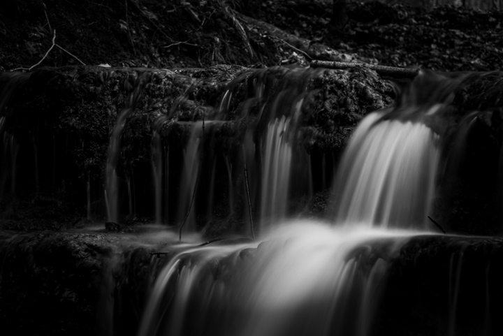
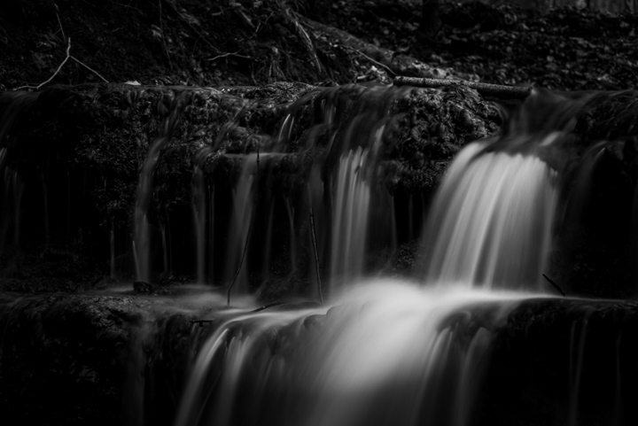

Wild Horses
Wild horses move with purpose. I photograph the hierarchy—who leads, who yields, who protects. I wait for brief calm and small gestures. I work low with clean backgrounds and build one image at a time.


Hello and welcome to my site. I am Felix, a photographer, observer, and storyteller. My work has changed. I no longer just take photos. I create them with purpose, patience, and presence. I have grown in technique, but more importantly, I have learned to see. To slow down. To frame not just what is there, but what it means. Each image now reflects more than a moment. It reflects intent. Stillness. Story. This portfolio marks that shift. It is not just about what I saw. It is about how I chose to show it. This is where my craft became a voice.
No GateKeepers
Wild horses move with purpose. I photograph the hierarchy—who leads, who yields, who protects. I wait for brief calm and small gestures. I work low with clean backgrounds and build one image at a time.
Places where noise drops and detail matters. I arrive early when streets breathe and settle. I build frames from edges, lines, and shadow. Color stays modest so structure can speak.


I balance motion with texture. Foam lines guide the eye through the frame. I guard wet rock highlights and deep shadows. Soft light, steady footing, deliberate timing.
 



I reduce the scene to horizon, shape, and tone. I wait for weather windows, not landmarks. Few elements, room to breathe, quiet color. Exact horizons; time smooths the water.